Booquo nos da tarifa plana para leer libros electrónicos
Wed, 15 Feb 2012 11:00:08 GMT

Uno de los pocos protagonistas del universo de libro en España que quedaba por plasmar su idea de futuro era el Círculo de Lectores. Pues bien, ya tenemos su apuesta. Se llama Booquo y plantea dos ideas un poco diferentes a lo visto hasta ahora.
Booquo sale al mercado como una plataforma de lectura online, en la nube. Además, al contrario que otras apuestas de protagonistas importantes, no sale con su libro electrónico ni parece que tenga mucha intención de promover la tinta electrónica. Su plataforma va más en línea con los tablets y smartphones, que junto con el ordenador, son los tres elementos desde los que quieren que leeamos libros y revistas.
Una tarifa plana para libros y revistas
El rumor que en lo últimos días era muy fuerte sobre la posibilidad de que Booquo saliera con el sistema de tarifa plana a lo Spotify se ha cumplido. Booquo Premium es un servicio que por 9.90 euros al mes te permite el acceso a una biblioteca de libros y revistas actuales, además de permitirte seleccionar un libro de máxima actualidad al mes de alguno de los canales temáticos.
Esos libros de tu biblioteca se pueden leer online en el ordenador o tablets bajo iOS y Android, pudiendo también descargarlos para lectura offline. Pero si dejamos de pagar la suscripción, dejan de estar disponibles.
Existe también la posibilidad de comprar libros con precios todavía altos (en línea con el libro electrónico en España), y en este caso, sí que permanecerán en nuestra biblioteca aunque no estemos suscritos al servicio Premium. Los podremos también leer de forma offline pero siempre a través de su plataforma y en un máximo de cinco equipos. No hay mención a lectores de tinta electrónica.
La plataforma de el Círculo de Lectores también ofrece streaming de cine de la mano de Filmin.
En desarrollo …
Más información | Booquo.

Tablets y ultraportátiles: diferencias técnicas
Wed, 15 Feb 2012 09:10:00 GMT
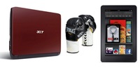¡Que empiece la lucha!
Introduzcamos un poco el tema: tablets y ultraportátiles, dos conceptos con unos pocos años de vida y que han generado mucho revuelo. Dicen que uno es un tipo de producto ya muerto, del pasado, mientras que otro ha llegado incluso para iniciar una nueva era en el mundo de la tecnología.
A priori podríamos pensar que tablets y netbooks son dos dispositivos parecidos, al menos si atendemos a su tamaño y formato físico. Hay diferencias externas obvias, mientras que otras están escondidas tras la piel de cada dispositivo. Hoy queremos explicaros las diferencias técnicas entre tablets y ultraportátiles para así poder entender por qué unos están teniendo tanto éxito… mientras que los otros parecen abocados al fracaso.
Diferencias externas: tamaño, diseño y teclado
Empecemos con lo más lógico: el aspecto externo.
La definición de ultraportátil nunca ha estado formalmente definida. Si bien la cota inferior parece clara (portátiles a partir de las seis o siete pulgadas de pantalla), muchos dudan a la hora de determinar el límite del tamaño de uno de estos equipos. ¿Once pulgadas? ¿Tal vez doce? ¿O también incluimos los de trece?
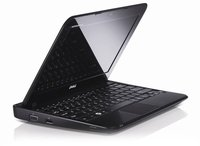
Esto es algo que no ocurre tan claramente en los tablets: la inmensa mayoría de modelos están entre las 7 y 10 pulgadas, aunque hay alguna excepción que no sabemos muy bien si realmente es un teléfono móvil o una tableta. Aún así parece que la comparativa entre tablets y netbooks empieza a dar sus frutos: existe un cierto tamaño que comparten tanto uno como otro dispositivo. Ya hay espacio para la batalla.
Si bien en tamaño son más o menos similares, existen algunas diferencias externas muy evidentes: el diseño de un dispositivo y otro es muy diferente. Los tablets ofrecen diseños mucho más cuidados con líneas trabajadas, serias y muy marcadas. Generalmente hablamos del empleo de materiales que van más allá del odiado plástico, con metal como principal protagonista.
Los ultraportátiles son muy diferentes, y sin duda alguna la inmensa mayoría de modelos hacen uso de plástico. Por arriba, por abajo, por el centro y también por dentro. Salvo puntuales excepciones, un tablet guarda un diseño mucho más cuidado que un ultraportátil.
Y por último, otra de las diferencias externas está en el teclado: sí para los ultraportátiles y no para los tablets. Hablamos de teclado físico, claro, donde salvo el Asus Transformer y algún modelo minoritario de Lenovo es necesario acudir a teclados virtuales sobre la pantalla. Y no se para vosotros, pero para mi no es lo mismo.
La pantalla
Antes mencionamos a la pantalla y su tamaño como una de las similitudes entre tablets y ultraportátiles. Pero ¿no hablábamos de diferencias? Es que más allá del tamaño que más o menos comparten son muy diferentes.
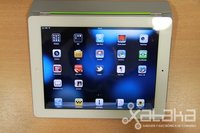
Una es táctil y la otra no, lo cual determinará, a su vez, otras diferencias a otros niveles. Además del modo de uso también podemos hablar de la resolución, siendo mayor en los tablets y más aún con los modelos que están por venir. También, mientras que los netbooks usan monitores de tipo LCD las tabletas optan por tipos de pantalla con mejores colores como por ejemplo las AMOLED (y sus vertientes) o los paneles IPS.
En el hardware
Vayamos con las tripas, los componentes hardware de cada uno de los dispositivos donde me parece que está la clave del asunto que traemos entre manos.
Los ultraportátiles optan en su mayoría por arquitecturas x86 compatibles con sistemas Microsoft Windows. Estos procesadores son, generalmente, Intel Atom de baja potencia y consumo reducido. Su rendimiento es bastante moderado y cuentan con modelos de un par de núcleos, a lo sumo.
En el otro lado, los tablets están apostando por plataformas ARM que tradicionalmente siempre han sabido economizar mucho más, ya que hacen uso de un conjunto de instrucciones RISC (Reduced instruction set computing) altamente optimizadas para su ejecución. Por ello mantienen un rendimiento bastante aceptable con consumos mínimos, notablemente menores que los aportados por las arquitecturas x86. En la actualidad ya existen procesadores ARM con hasta cuatro núcleos, como por ejemplo Tegra 3.
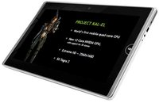
El microprocesador y su arquitectura repercuten en otros factores, principalmente en el sistema operativo. Sobre él hablaremos más adelante.
Otras diferencias hardware: la memoria, y no hablo de la RAM donde están más o menos a la par, si no en el almacenamiento interno o memoria no volátil. Los ultraportátiles ofertaron memoria de tipo NAND en sus primeros modelos de unos pocos gigas, pero posteriormente se pasaron a los discos duros tradicionales para poder añadir altas capacidades.
Por contra, los tablets siempre han trabajado con memoria flash, mucho más rápida que el almacenamiento mecánico pero también más cara. Por ello, su capacidad suele estar entre los 8 y los 64 GB, por otra parte más que suficiente para los sistemas operativos orientados a tabletas.
Sistema operativo
Otra de las grandes virtudes de los tablets es el sistema operativo, construido a medida de sus hardware. Aprovechan las posibilidades que brinda una pantalla multitáctil y ofrecen una interfaz preparada para pantallas pequeñas. Sea cual sea el desarrollador del propio sistema, parece claro que el cambio de un sistema operativo “móvil” respecto de un
Windows, Linux o Mac OS X es realmente amplio.

Quería llegar a este punto para hacer referencia a la arquitectura del procesador, ya que dependiendo de ella variará el tipo de sistema operativo que podamos utilizar. Una cierta arquitectura define una serie de operaciones de bajo nivel, denominadas instrucciones, que son las que ejecuta el sistema operativo. Dentro del diseño de capas que forma un computador es necesario que cada capa interactúe con sus contiguas a través del mismo idioma. Por ello se habla de sistemas operativos x86 (Windows, Mac OS X, ciertas distribuciones de Linux) y otras para ARM (generalmente los Linux y próximamente Windows 8).
Y no, construir un sistema operativo para ambas plataformas hardware no es simplemente darle a un botón. Todo lo contrario, es un proceso muy complejo que requiere que todas las piezas del puzle encajen perfectamente. Para los que no os lo creáis os invito a trastear con Minix, una distribución muy “simple” y ampliamente utilizada en el ámbito académico; o con el código fuente del kernel de Linux, el corazón de estas las distribuciones del conocido sistema operativo “libre”.
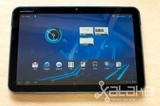
El sistema operativo se ha convertido en una de las pieza clave de un computador, ya que es su eje central y de él dependen otros muchos factores. Ahora es el momento de lanzar una pregunta: ¿compraríais un tablet con Windows 7? ¿Y un portátil con Android, Windows Phone o iOS?
Conclusiones
Siempre he pensado que un tablet y un ordenador son, desde el punto de vista de su uso y las tareas que cumplen, dos cosas diferentes. ¿Y desde el hardware? En los componentes vemos claramente que hay ciertos aspectos que comparten, como por ejemplo el tamaño de la pantalla, la memoria RAM o la resolución. Pero creo que son más las diferencias que las similitudes.
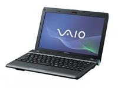
Ya que hablamos de hardware la arquitectura es una de las grandes diferencias, si no la principal, y de ella dependen otros factores como el sistema operativo gracias al cual las tabletas han llegado a ser lo que son. Y precisamente del sistema operativo depende la usabilidad, que viene a ser cómo manejamos los programas, los tipos de aplicaciones existentes, etc. En definitiva, la experiencia de usuario.
Bajo mi punto de vista, la clave del éxito de los tablets está en el sistema operativo que le aporta funcionalidades inexistentes en cualquier otro tipo de computador. Un acercamiento en este sentido para los netbooks se intentó dar con Chrome OS y otros sistemas como por ejemplo Ubuntu Netbook Remix (que, por cierto, dejará de existir), pero ha sido un pequeño paso muy tímido que no ha terminado de cuajar.
Me da la sensación de que los ultraportátiles o netbooks terminarán desapareciendo. Actualmente ya están en un segundo plano y en los próximos años serán eliminados de las estanterías de las tiendas. ¿Serán los tablets su reemplazo? Siempre he sido de la opinión de que un tablet es un complemento del ordenador, y no su sustituto, pero reconozco que ésta es la teoría de buena parte de los usuarios.
En Xataka | Categoría tablet y Ultraportátil.
HP Z1, una estación de trabajo en formato todo en uno
Wed, 15 Feb 2012 06:41:00 GMT

Con apariencia de ordenador de sobremesa todo un uno clásico pero un gran secreto en su interior. Así se presenta el nuevo ordenador HP Z1, aunque nos deberíamos referir a él como una estación de trabajo pero con formato diferente a lo que estamos habituados.
El HP Z1 presume de pantalla IPS con diagonal de 27 pulgadas (resolución de 2560×1440 pixeles) que alimenta un corazón que podemos abrir y configurar a nuestro gusto sin problema, como si de un ordenador de sobremesa se tratara. Esa es una de las innovaciones de las que se pueden sentir orgullosos en HP.
En ese interior configurable podemos encontrar hasta 32 GB de memoria RAM que acompañan a procesadores Xeon de cuatro núcleos y tarjetas Q4000M de NVIDIA. La capacidad interna la podemos personalizar con la combinación de discos SSD de hasta 300 GB y clásicos de 2 TB. Y si lo deseamos, hay unidad Blu-Ray.

Esta nueva estación de trabajo HP Z1 se pone a la venta en abril con un precio de partida de 1.900 dólares que “solo” incluye gráfica integrada de Intel y procesador Core i3.
Más información | HP.
AMD Fusion 'Trinity' para sobremesa superarán los 4 GHz.
Tue, 14 Feb 2012 18:23:00 GMT
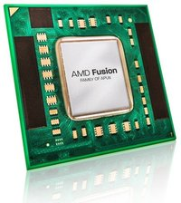
Las especificaciones de los nuevos microprocesadores para sobremesas AMD Fusion ‘Trinity’ se han filtrado recientemente. Y son más que completas, aportando prácticamente todos los datos técnicos necesarios para empezar a estudiar estos nuevos modelos.
Estos nuevos AMD Fusion de los que hablaremos hoy se utilizarán en ordenadores de sobremesa y son un par de modelos. Curiosamente veremos una nueva plataforma, denominada Fusion A10 que en la teoría será la que mayor potencial ofrecerá, superando la barrera de los 4 GHz. de reloj en la CPU.
| Modelo | A10-5800K | A10-5700 | A8-5600K | A8-5500 | A6-5400 | A4-5300 |
| Núcleos | 4 | 4 | 4 | 4 | 2 | 2 |
| Frecuencia | 3,8 GHz | 3,4 GHz | 3,6 GHz | 3,2 GHz | - | - |
| Turbo CPU | 4,2 GHz | 4,0 GHz | 3,9 GHz | 3,7 GHz | - | - |
| Cache L2 | 4MB | 4MB | 4MB | 4MB | 1MB | 1MB |
Modelo GPU
| HD 7660D | - | HD 7560D | - | - | - |
| Radeon Stream Cores | 384 | 384 | 256 | 256 | 192 | 128 |
| Frecuencia GPU | 800 MHz | 760 MHz | 760 MHz | 760 MHz | - | - |
Memoria RAM
| DDR3-1866 | DDR3-1866 | DDR3-1866 | DDR3-1866 | DDR3-1866 | DDR3-1600 |
| TDP | 100W | 65W | 100W | 65W | 65W | 65W |
| Socket | FM2 | FM2 | FM2 | FM2 | FM2 | FM2 |
Es de esperar que estos sean simplemente los dos primeros modelos de las APU de nueva generación, con lo que en un futuro llegarán otros nuevos productos que cubrirán nuevas gamas.
Debemos destacar el AMD A10-5800K, el nuevo modelo más potente y que trabajará a 3.8 GHz. con Turbo a 4.2, una cifra realmente alta. Tendrá cuatro núcleos y seguirán un proceso de fabricación en 32 nanómetros, ya que os recuerdo que la CPU de estos Fusion está basada en los actuales Bulldozer o AMD FX.
También es necesario indicar el alto reloj de la GPU, alcanzando los 800 MHz. y siendo un modelo de la nueva generación, las AMD 7000 Series que por el nombre apunta maneras: AMD 7660D. Su rendimiento debería estar cercano al de las tarjetas gráficas dedicadas de gama media o baja.
Por último el otro modelo es el AMD A8-5600K, más comedido que el A10 pero también con muy buenas características: 3.6 GHz. (Turbo hasta 3.9) y GPU AMD 7560D a 760 MHz.
Nuevo socket AMD FM2
Desde hace tiempo se lleva comentando la llegada de un nuevo socket, el AMD FM2 que eliminará la retrocompatibilidad en los dos sentidos. Ni podrás usar un procesador para FM1 en el nuevo socket, ni un nuevo procesador en el socket antiguo. Tocará comprar la plataforma entera (placa base más procesador) al completo.
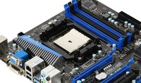MSI A75MA-G55 con socket FM1
Esto rompe con la tradición de AMD de mantener sockets durante múltiples generaciones, llegando incluso a tener varios años de vida. El actual socket FM1, utilizado en los primeros Fusion y también en ciertos Athlon II parece que pasarán a mejor vida y serán completamente reemplazados por el FM2, que esperemos sí pueda aguantar algo más de tiempo con vida.
El futuro de AMD Fusion
A la vista de los últimos lanzamientos y estos que están por venir, AMD Fusion apunta maneras en el apartado gráfico donde el fabricante ha mostrado tener cierta ventaja a la competencia en los últimos años. Me da la sensación de que AMD se está olvidando de los procesadores más potentes, sus modelos FX, y se va a centrar en sus APU AMD Fusion que son las que realmente obtienen la mayoría de las ventas.
La lucha de AMD FX versus Intel Core i7 ‘Sandy Bridge E’ es claramente favorable a este último modelo. AMD Fusion luchará próximamente con Ivy Bridge, la nueva plataforma de Intel también para consumo en todas las gamas y cuya proyección es realmente alta, gracias en parte al nuevo proceso de fabricación en 22 nanómetros y los denominados Tri-Gate. Se espera mucho de Intel en esta generación.
Parece que este mundo no para – afortunadamente para los que nos gusta – y, de nuevo, tendremos un año muy calentito en lo referente a las gamas medias y más atractivas para muchos usuarios.
Vía | NordicHardware.
Más información | Donanimhaber.
HP TopShot LaserJet escanea objetos reales
Tue, 14 Feb 2012 15:50:00 GMT
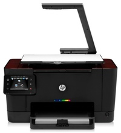
HP le ha colocado un brazo articulado con una cámara y tres flashes a su nueva impresora. ¿Para qué? Pues para lo que imaginas: poder escanear objetos reales.
La nueva HP TopShot LaserJet Pro M275 es en apariencia un impresora multifunción para pequeñas empresas pero que esconde un secreto en forma de tecnología HP TopShot Scanning. Con la cámara colocada en un brazo articulado y la ayuda de tres flashes (para no tener que preocuparnos de la iluminación dice HP), la impresora captura seis imágenes con diferentes ángulos de cualquier objeto 3D … que podamos colocar bajo ella.
El control de las acciones se realiza desde una pantalla táctil a color. La impresora cuenta también con WiFi para tener acceso sin cables a diferentes servicio de almacenamiento online así como facilitar la impresión sin cables. Los servicios ePrint, Apple AirPrint y Google Cloud Print están soportados.
Por lo demás esta impresora de tipo láser es más común. La HP TopShot LaserJet Pro M275 ya se puede comprar por 349 euros.
Más información | HP.
Toshiba AT200, precio y disponibilidad en España
Tue, 14 Feb 2012 13:05:53 GMT
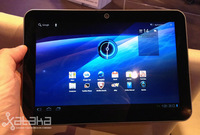
Acabamos de estar en la presentación del Toshiba AT200. El nuevo tablet de la Compañía japonesa desembarca esta semana en las tiendas y lo hace a un precio de 499 euros.
No hay ninguna posibilidad de hacerse con el AT200 a menos precio y vinculado al contrato de alguna operadora, lo cual tampoco es muy de extrañar si tenemos en cuenta que el nuevo tablet no tiene versión 3G.
Por lo demás, el Toshiba AT200 nos ha dado la misma buena sensación que ya nos dió en su día cuando lo probamos en la IFA. Con sólo 7.7 milímetros uniformes de grosor y 535 gramos de peso, el AT200 es muy agradable de manejar. En su construcción intervienen ingredientes de muy buena factura como un panel IPS de 10 pulgadas y resolución 1280 × 800 píxeles.
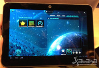
Equipado con un procesador ARM Cortex A9 OMAP 4430 de Texas Instruments, el mayor problema del Toshiba AT200 es que, para ser un doble núcleo, llega un poco tarde a las tiendas en las que tendrá que competir con, por ejemplo, el Asus Transformer Prime, un Quad-core con teclado incluido y superior en muchos detalles por sólo 100 euros más.
Otro detalle es que el AT200 aún lleva Android en su versión Honeycomb. El fabricante ha asegurado que se actualizará a Ice Cream Sandwich, pero no ha dicho cuando y, de nuevo, ya hay propuestas con la última versión sobre la mesa. Sería una pena que un tablet bien construido y de calidad como el AT200 se perdiera en el olvido por una mala política de ventas y actualizaciones.
Más información | Toshiba
Wuaki.tv: diez respuestas sobre su funcionamiento
Tue, 14 Feb 2012 08:00:00 GMT

Una de las propuestas de cine en streaming que más caló en 2011 fue Wuaki.tv. Tras un año de rodaje, este 2012 promete ser todavía mejor, tal y como nos comenta en una entrevista a Xataka uno de sus fundadores.
Wuaki.tv acertó de lleno en su apuesta por integrarse en los televisores, el centro desde el que es más probable que el consumidor acabe viendo una película o serie. Es su punto más prometedor, pero analicemos como ya hemos hecho con los anteriores servicios, qué nos ofrece Wuaki.tv contestando a diez preguntas sobre su funcionamiento.
Todo lo que necesitas saber sobre Wuaki.tv
-
¿Qué encuentro en su catálogo? una mezcla de cine y series tanto de catálogo como de estrenos, pero con el inconveniente de que las novedades se esfuman a los tres meses.
-
¿Qué calidad y extras tienen los contenidos? Los contenidos de Wuaki.tv están disponibles de momento solo en calidad DVD y con sonido 2.0. Vienen la mayoría de títulos en versión original además de la doblada, pero sin subtítulos.
-
¿Puedo comprar o solo alquilar? Se pueden tanto comprar como alquilar títulos, pero sin orden aparente. En unos casos están las dos opciones disponibles, en otros solo una de ellas …
-
¿Cuáles son las condiciones del alquiler y compra? tenemos 48 horas desde que empezamos la visualización de una película. En el caso de la compra, el tiempo que “poseemos” un título en la videoteca de Wuaki.tv es de tres años. Si queremos descargarlo a nuestro ordenador, tenemos 120 días desde la compra y ya lo podemos tener indefinidamente. Solo es compatible con ordenadores Windows,q que será el dispositivo autorizado a la reproducción de dicha copia física. En la reproducción en streaming, no podemos visualizar el mismo contenido en dos equipos asociados a nuestra cuenta de forma simultánea, pero sí dos diferentes.
-
¿Hay posibilidad de tarifa plana? No de momento, pero es una de las promesas para este 2012.
-
¿Cuáles son los precios? en alquiler, los títulos parten de un euro, pero son excepciones. Lo habitual es encontrar películas de catálogo a unos dos euros. En el catálogo de estrenos encontramos las películas a 4 euros con calidad estándar. Las compras van de los 10 a los 15 euros de forma general con calidad SD. En cuanto a las series, los capítulos sueltos están a dos euros, y comprar temporadas enteras, por 30 euros. En esos casos no hay opciones de alquilar temporadas ni capítulos. Tan solo algunas dan la opción de alquilar temporadas completas (30 días para verlos todos) o capítulos sueltos (48 horas). The Walking Dead tiene la temporada primera por 8 euros y cada capítulo por 1.5 euros. Hay unos cuantos títulos gratuitos por medio de un anuncio previo a la reproducción, pero son pocos.
-
¿Cómo puedo pagar los alquileres o compras? solamente con tarjeta de crédito.
-
¿En qué equipos, plataformas y sistemas operativos puede usar el servicio? Wuaki.tv apuesta por el navegador para ordenadores (los títulos en HD solo se pueden visualizar en televisores) y los televisores y centros multimedia, donde ha conseguido acuerdos con las grades marcas que disponen de plataformas de Smart TV.
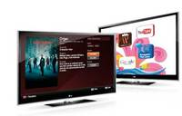
-
¿Qué experiencia de uso me espera? normal. En la web, la información está bien organizada pero es escasa comparada con otros servicios. Además, usa flash por lo que tablets y equipos similares están excluidos hasta que tengan aplicación propia.
-
¿Hay recomendaciones y enlace con las redes sociales? Hay posibilidad de anotar títulos como favoritos, como que ya la has visto y dejar opiniones. También se puede compartir vía Facebook y Google Plus, y encontramos en cada ficha la nota de servicios como FilmAffinity.
La opinión de Xataka
Tras repasar cómo es el servicio de Wuaki.tv en España, ahí van nuestras conclusiones:
Lo que más nos gusta
- La integración directa en plataformas de Smart TV.
- La opción de la mediateca.
- Sencillez de compra una vez introducidos los datos de la tarjeta
- Las ofertas de alquiler, que son muy numerosas, especialmente los fines de semana.
Lo que le falta
- Mantener los estrenos más allá de los tres meses que están en “cartelera” en la actualidad.
- Opción de descarga para visualización sin conexión en la opción de alquileres.
- Más títulos en alta definición y con subtítulos.
- Que las opciones de compra y alquiler estén en todos los títulos tanto de cine como de series.
Onkyo ya tiene nuevos receptores AV
Tue, 14 Feb 2012 06:01:00 GMT
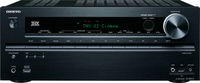
Onkyo no ha tardado mucho en desvelar los que serán sus receptores AV de cabecera para la gama media en este 2012. Su objetivo en convencernos para que todo lo que queramos ver pase por ellos.
La conectividad es un aspecto especialmente cuidado en los nuevos Onkyo TX-NR515 y TX-NR616, equipos a los que pueden conectar hasta ocho dispositivos vía HDMI, pues esos son exactamente los puertos de ese tipo que ofrecen al consumidor. Y Onkyo tampoco se olvida de la conexión de moda, MHL, y coloca un puerto compatible en el frontal de sus equipos para que la conexión de teléfonos móviles sea algo sencillo y directo. Lo que nos extraña es que se haya olvidado de AirPlay.
En total son cuatro los nuevos modelos, todos ellos “musculosos” en apariencia y por dentro.
El modelo más sencillo es el Onkyo TX-SR313, un sistema 5.1 a razón de 100 W por canal, con cuatro puertos HDMI, compatible con el vídeo 3D y con tecnología WRAT y ARC (audio return channel), además de puerto USB y compatibilidad con los equipos de Apple. Su precio podría rondar los 300 dólares.

Le sigue en prestaciones el modelo Onkyo TX-NR414, también un 5.1 con seis puertos HDMI y conectividad a Internet vía Ethernet o WiFi (mediante adaptador) con la que puede acceder a canales de radio por Internet o incluso servicios como Spotify. Su precio rondará los 500 dólares.
El primero de los dos modelos avanzados es el Onkyo TX-NR515, un equipo 7.2 con procesado de vídeo Qdeo de Marvell, sonido Dolby Pro Logic IIz y dos puertos USB en el frontal. Costaría unos 600 dólares.
Y “la reina de la corona“ es el Onkyo TX-NR616, con 7.2 canales a razón de 165 W cada uno, y toda la tecnología de vídeo y audio necesaria para disfrutar en casa (THX Select2 Plus, Audyssey DSX …) Su precio será de unos 700 dólares.

Más información | Onkyo.
La UE da luz verde a la compra de Motorola por parte de Google
Mon, 13 Feb 2012 18:33:32 GMT
Hace apenas un mes que os informábamos de que la UE había paralizado temporalmente la compra de Motorola por parte de Google. La comisión encargada de aprobar la operación detuvo el proceso hasta que Google no entregara cierta documentación adicional.
Desde Mountain View han debido darse una prisa loca enviando documentos porque menos de un mes después de aquella noticia, la UE ha hecho oficial su visto bueno definitivo a la operación.
Ha sido el propio Joaquín Almunia, actual vicepresidente del Ejecutivo comunitario y responsable de Competencia quien ha dado la noticia en un escueto comunicado. ‘Hemos autorizado la compra de Motorola Mobility por parte de Google porque, tras un examen minucioso, hemos concluido que no plantea ningún problema de competencia’ comentaba el vicepresidente.
La Comisión de la UE ha examinado las posibilidades que hay de que Google ponga trabas al uso de Android por parte de otras marcas. También ha valorado si alguna de las actuales patentes de Motorola pueden servir a Google para mejorar sustancialemente la experiencia de sus servicios, o si algunas de estas patentes pueden suponer una ventaja diferencial en la UE.
A todas estas preguntas, la comición ha dado respuesta negativa. En otras palabras, que no encuentran obstáculo alguno a la libre competencia, al menos en lo que al mercado de la UE se refiere. Dicho esto, ya sólo falta el previsible beneplácito de la administración estadounidense para que el matrimonio entre ambas compañías sea un hecho.
Vía | Europa Press
Más información | Official Google Blog
Optoma ML 300, proyector LED con músculo
Mon, 13 Feb 2012 16:30:00 GMT
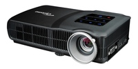
Optoma ha sacado a la calle su nuevo proyector de vídeo dentro de la gama de compactos. El Optoma ML 300 tiene unas dimensiones de 18×11 cm y un peso de 635 gramos, pero una apariencia de proyector serio.
Con esas dimensiones creo que tenías claro ya que estamos ante un proyector LED compacto cuyos datos técnicos que debes conocer son su brillo, de 300 lúmenes, y el contraste, de 3.000:1
La resolución nativa de este proyector compacto de Optoma es de 1280×800, pudiendo proyectar el vídeo hasta alcanzar una diagonal de 160 pulgadas.
Como buen modelo compacto, hay posibilidad de reproducir contenido directamente desde su memoria interna, el puerto USB 2.0 o tarjetas de tipo SD, incluidos los formatos de Microsoft Office. Como conexiones nos encontramos con entrada HDMI y VGA, y disponemos de altavoces integrados de 2 W de potencia.
El Optoma ML 300, con una vida útil de la bombilla de 20.000 horas, viene con mando a distancia incluido y cuesta 529 euros.
Más información | Optoma.
Genius WideCam 1050, una webcam panorámica
Mon, 13 Feb 2012 14:30:00 GMT
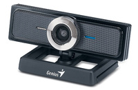
Genius acaba de actualizar su catálogo de webcams con el lanzamiento de la Genius Widecam 1050, una cámara cuya característica más destacable es una nueva óptica gran angular capaz de mostrar una imagen de hasta 120 grados de lo que tiene frente a ella.
Concebida para videoconferencias colectivas en entornos como salas de juntas, la Widecam tiene una óptica de cristal con foco manual capaz de ofrecer imágenes de cinco megapíxeles ppor interpolación o grabaciones de vídeo de hasta 720p de resolución.
Un único micrófono frontal se encarga del audio. Con un diseño rectangular, la Widecam 1050 puede girar 360 grados en torno a su base y un clip retractil se encarga de facilitar su obicación sobre portátiles.
La Genius Widecam 1050 está ya disponible en algunas páginas web a un precio de en torno a los 37 euros.
Más información | Genius
¿Apple hace elegir a Pegatron entre los MacBook Airs y los Zenbooks?
Mon, 13 Feb 2012 12:32:04 GMT
Es complicado comprender cómo funcionan las cosas a estos niveles industriales, y también debemos coger con alfileres las informaciones, pero sin duda se trata de ese tipo de noticias que llaman la atención por los protagonistas, y por el poder que tienen para manejar las producciones en plantas de fabricación comunes a varias empresas.
Según nos informan desde China, Apple dio un ultimátum a Pegatron, el fabricante de sus MacBook Airs, entre otros, para que dejara de producir un producto de la competencia, más concretamente hablamos de los Zenbooks de ASUS.
Los ultrabooks de la firma taiwanesa también son fabricados por Pegatron, cuestión que no le ha gustado mucho a los de Cupertino, y les comunicó que deberían elegir entre fabricar uno u otro dispositivo. Os recordamos que el fabricante además tiene el contrato para fabricar el actual iPhone, y muy posiblemente esté haciendo lo propio con el iPad 3.
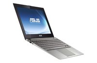
Apple no tiene muy buena opinión sobre el diseño monobloque metálico de los Zenbooks, ya que los considera demasiado similares a su producto, pero no termino de entender qué culpa de esto tiene Pegatron, que se encarga únicamente de fabricarlos, no de diseñarlos.
El contrato de Apple parece bastante más suculento que el de ASUS, por lo que seguirán fabricando MacBook Airs con mayor prioridad, y parece que ASUS terminará por mover la producción a Compal o Wistron a finales de marzo.
Apple pone en marcha una inspección de sus proveedores a través de la FLA
Relativo al tema de la noticia, Apple ha pedido a la FLA (Fair Labor Association), que realice auditorías sobre sus proveedores, especialmente en las factorías de Foxconn, famosas fuera de China por sus malas condiciones laborales.
Las inspecciones se han iniciado en el día de hoy, lunes, en Foxconn City, según anuncia Tim Cook, actual CEO de Apple. Se entrevistará a empleados, se inspeccionarán instalaciones, y las conclusiones serán presentadas en marzo.
Más adelante se tomarán las mismas acciones con las plantas de Pegatron y Quanta, para cubrir la mayor parte de la producción de productos Apple.
Vía | SlashGear | ChinaTimes
Youzee se estrena en los televisores Smart TV de Samsung
Mon, 13 Feb 2012 11:00:00 GMT

Tal y como os contamos en nuestras diez respuestas sobre el funcionamiento de Youzee, las aplicaciones para diferentes plataformas era una de las mejoras que creíamos necesarias para este servicio. Pues bien, la primera ya ha llegado en forma de aplicación para el ecosistema Smart TV de Samsung.
La aplicación de Youzee para los televisores de Samsung no es una adaptación de la web para un televisor, sino que se trata (como debe ser) de una aplicación en la que la interfaz se ha adaptado a las características de funcionamiento de un televisor, donde el protagonista es un mando.
La interfaz es sencilla y da protagonismo a las carátulas de cada título, las cuales, al pasar por encima de ellas, nos dan información básica de la película, pudiendo desde ese momento empezar a verla, activar el trailer o añadirla a favoritos. Tampoco falta el buscador integrado.
La integración con la comunidad, especialmente los amigos, no queda fuera de la aplicación de Youzee para Smart TV de Samsung. Hay una bandeja de entrada desde la que acceder a los mensajes y recomendaciones. Y también hay presencia del control parental.
La única pega de la aplicación es que de momento no está disponible todo el catálogo, pero desde Youzee afirman que se va incorporando progresivamente hasta igualarse.
Más información | Youzee.
"Seguro que tendremos un tablet con Windows 8", entrevista a Salvador Cayón y Carlos Vidal de HP
Wed, 15 Feb 2012 10:00:00 GMT
HP es una de las compañías que más frentes abarca en todas sus divisiones. Portátiles, ultrabooks, tablets con Windows … y no nos olvidamos de WebOS, un tema de actualidad con su próxima apertura.
En Xataka teníamos muchas preguntas sobre estos temas y para contestarlas hemos contado con Carlos Vidal, responsable del área de portátiles de consumo y a Salvador Cayón, director de marketing de HP.
En una entrevista interactiva (puedes saltar a la pregunta que quieras en todo momento) hemos hablado con ellos del lugar que queda en casa para el sobremesa, el papel que tendrán los Ultrathin de AMD en el catálogo de HP, el futuro de WebOS (que ellos consideran como su apuesta) y hasta les hemos preguntado si Apple es quien marca el camino en la industria y los demás se limitan a seguir sus pasos. Para HP sí lo hace en el mercado de los tablets, que aunque era un concepto que ya existía, ellos han sabido ponerlo en el mercado con la experiencia correcta.
Philips Fidelio AS851, probamos la base bluetooth "amiga" de Android
Wed, 15 Feb 2012 07:35:00 GMT

Philips ha sido de las primeras compañías que se han puesto al servicio de los poseedores de equipos Android a la hora de diseñar unos altavoces con base.
La base Philips Fidelio AS851 es el modelo más completo de los holandeses de los tres que tiene para Android, y ya ha pasado por nuestras manos. A continuación te contamos qué nos ha parecido.
Philips Fidelio AS851, base de calidad con bluetooth
La Philips Fidelio AS851 es un sistema de sonido compacto con base en forma de puerto microUSB. En su interior encontramos dos altavoces de tres pulgadas con potencia de 15 W cada uno.

El exterior es idéntico en diseño al de los modelos Fidelio que hasta ahora la marca holandesa dedicaba a los reproductores y teléfonos de Apple. Con un excelente acabado, como controles solo encontramos el de encendido, así como el de subida y bajada de volumen. No son controles táctiles sino físicos, pero integrados en la carcasa sin sobresalir en la superficie. Entre ellos está el logo de la compañía y un icono que nos indica cuándo tenemos un equipo sincronizado con la base.

Y es que la base Philips Fidelio AS851 es un sistema de sonido bluetooth que admite cualquier fuente compatible. También hay un conector minijack de 3.5 mm (cable incluido) en la parte de atrás junto con un USB que nos sirve para recargar cualquier teléfono o reproductor mientras lo tenemos conectado por bluetooth con los altavoces, una idea que nos parece estupenda.
 El puerto USB de recarga nos parece una idea estupenda
El puerto USB de recarga nos parece una idea estupenda ¿Y por qué es una base para teléfonos y reproductores Android?
Con diferentes conectores, tamaños, pesos y lugar de los elementos básicos, ofrecer un sistema de sonido con base y darle el apelativo de “para Android” no es sencillo. ¿Lo ha conseguido Philips? Pues sí y no.
Empezamos por el no. Philips no ha conseguido una base que podamos decir que es de uso exclusivo para teléfonos o reproductores con sistema Android. En realidad de trata de un sistema de sonido bluetooth que podríamos usar con cualquier fuente de sonido.

Pero sí, sí que es una base Android porque Philips ha ideado un sistema que recurre a dos puntos para que podamos llamarlo con ese nombre. Por un lado ha colocado un conector microUSB con un sistema más o menos flexible que podemos regular para acomodar sin problemas a la mayoría de teléfonos con sistema operativo Android.
 El conector puede girar y moverse para acoger cualquier teléfono Android
El conector puede girar y moverse para acoger cualquier teléfono Android El conector, que es macho, puede girarse 360 grados, y la base sobre la que está construido se mueve de izquierda a derecha sin problemas. El inconveniente que Philips tenía que solucionar es que el conector microUSB no es precisamente lo mejor del mercado para actuar como soporte, así que, dado que hay teléfonos bastante pesados, Philips ha ideado un sistema de apoyo que podemos regular en altura para acomodar de la mejor y más estable manera los diferentes teléfonos.

El resultado funciona, y dado que Android no optará por otro conector, tendremos que conformarnos con la solución que ha ideado Philips.
Pero diréis, ¿y para qué quiero el conector microUSB si el sonido no viaja por esa conexión? Pues estáis en lo correcto … a medias. Ese conector sirve para recargar el teléfono mientras lo usamos y además lanza una aplicación exclusiva Fidelio que es la segunda “pata” de este sistema de sonido para Android.

Esa aplicación incluye ecualizador, diferentes ajustes de sonido para el altavoz, alarma y hasta radio por Internet, pero lo interesante es que, nada más colocar el teléfono sobre el conector, la Fidelio App empareja el teléfono con la base de forma automática, sin que el usuario tenga que entrar en ninguna configuración del teléfono.
Los inconvenientes de este sistema que ha usado Philips para su base son evidentes. Dependiendo de dónde tenga el teléfono colocado el puerto microUSB, tendremos que colocar el equipo en formato vertical o apaisado. No hay alternativa. Y si lo colocamos en horizontal, aplicaciones como Spotify todavía no se adaptan al modo panorámico.

El posible problema de tener el conector en el lateral y un extremo lo ha solucionado Philips colocando unos pequeños soportes que podemos regular en altura y que le dan estabilidad al teléfono. Pero aun así, se nota que el conector microUSB no es el mejor aliado de bases de este tipo.
Sonido que convence en el hogar
En funcionamiento, el Philips Fidelio AS851 demuestra que no estamos ante una gama cualquiera de altavoces. Los holandeses se han posicionado de forma más que correcta en la gama de sonido doméstico de más calidad con sus sistemas Fidelio.
Este sistema para Android no es una excepción, y llena la habitación con un sonido potente y claro que disfrutarán los que le tengan aprecio a los graves. Los dos altavoces son de rango completo, y cubren muy bien los extremos agudo y grave, pero para nuestro gusto, presentan ligeras lagunas en la sección de medios, donde por ejemplo los modelos para iOS han dado mejores resultados (aunque es cierto que lo comparamos con el excelente DS9000 y sus cuatro altavoces para 100 W de potencia total)

La opinión de Xataka
Con los teléfonos y reproductores portátiles convirtiéndose en los dueños del espacio sonoro de los hogares digitales comunes, los sistemas de sonido personales ganan en presencia.
Philips tiene mucho camino recorrido en ese campo con su excelente gama Fidelio, ya sinónimo de calidad en el ámbito doméstico en el que los colocamos. Este sistema AS851 es un guiño cariñoso a los poseedores de teléfonos con sistema operativo Android que como hemos comprobado da un resultado como para sentirse orgullosos de poseerlo y plantar cara a los comentarios de los usuario iOS, que siempre han podido avasallar al resto de competidores en la gama de accesorios.

Philips no tenía sencillo ponerle la etiqueta de Android a un base cuando la diversidad de conectores y posición de los mismos lo hacía una misión casi imposible, pero el sistema que han ideado funciona, aunque nos parece que con la conectividad bluetooth solamente y el puerto USB de carga trasero hubiera bastado.
Eso sí, el Philips Fidelio AS851 cuesta 200 euros, algo a tener en cuenta, pero es bastante probable que amortices cada uno de esos euros si te gusta la música y quieres disfrutarla con calidad.
Galería de fotos
(Haz click en una imagen para ampliarla)
El sistema de sonido ha sido cedido para la prueba por parte de Philips. Puedes consultar nuestra política de relaciones con empresas
AMD 7770 y AMD 7750, las nuevas tarjetas gráficas de gama media
Wed, 15 Feb 2012 04:01:00 GMT
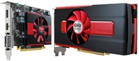
Muchos pensábamos que tras las AMD 7970 y la más reciente AMD 7950 llegarían las 7800 Series, cuyo nombre en clave a lo largo de los últimos años ha sido Pitcarin. Pues nos equivocábamos, y en esta ocasión las elegidas han sido las AMD 7770 y 7750.
Entramos en la gama media, con precios entre 100 y 200 euros y que gozan de gran éxito entre los usuarios. Se trata de un par de modelos en los que ante todo destacan los 28 nanómetros, aunque también hay algunas novedades que destriparemos a continuación:
Características técnicas2>
AMD 7770
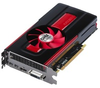
- Núcleo ‘Cape Verde’ a 1 GHz., 28 nanómetros
- 640 Stream Processors
- 1.28 TFLOPS
- 1 GB de memoria GDDR5 de 128-bits, 1.125 MHz.
-
TDP de 80 vatios
-
AMD ZeroCore Power
-
PCI Express 3.0
-
AMD Eyefinity 2.0
- Un conector de energía de 6 pines
- Salidas de vídeo DVI, HDMI y 2xminiDisplayPort
El modelo más potente de los dos presentados hoy, su rendimiento debería situarse en torno a lo aportado por la 6870 de la pasada generación. A su favor cuenta con ser la primera tarjeta gráfica cuyo núcleo funciona a 1 GHz. nativo, algo a lo que AMD denomina GHz. Edition y de lo que hablaremos más adelante.
Esta GPU será interesante por su relación calidad/precio. En España se venderá por 139 euros y debería permitir disfrutar de cualquier videojuego (en algunos casos con ciertas configuraciones intermedias) de forma bastante estable. Curiosamente, AMD nos ha comunicado que la AMD 6770 de la pasada generación es la tarjeta gráfica DX10/11 más usada en la plataforma Steam con el 28% de usuarios, con lo que la nueva AMD 7770 heredará su éxito.
Galería de fotos
(Haz click en una imagen para ampliarla)
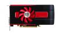
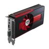
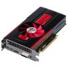
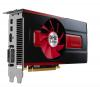
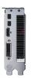
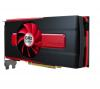
AMD 7750
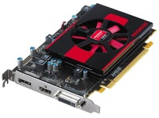
- Núcleo ‘Cape Verde’ a 800 MHz., 28 nanómetros
- 512 Stream Processors
- 819 GLOPS
- 1 GB de memoria GDDR5 de 128-bits, 1.125 MHz.
-
TDP de 55 vatios
-
AMD ZeroCore Power
-
PCI Express 3.0
-
AMD Eyefinity 2.0
- Sin conectores de energía adicionales
- Perfil bajo (ocupa un slot)
- Salidas de vídeo DVI, HDMI y DisplayPort
La pequeña de la familia, destaca ante todo por ser de perfil bajo: es decir, AMD 7750 ocupa un solo slot, al menos el modelo de referencia. Guarda la misma lista de compatibilidad que sus hermanas mayores y no requiere corriente. La propia AMD indica que es la rival directa de la actual NVidia GTX 550Ti, pero disponible por 99 euros.
Galería de fotos
(Haz click en una imagen para ampliarla)
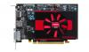
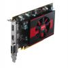
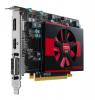
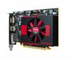
Ghz. Edition: el núcleo que llega al gigahertzio
Dejando de lado las características técnicas de las dos nuevas tarjetas gráficas, hay un aspecto que me gustaría remarcar: la AMD 7770 es la primera en tener un núcleo que alcanza el Gigahertzio en el modelo de referencia. Seguramente los fabricantes finales distribuyan modelos overclockeados de fábrica que superen esa cifra.
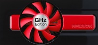
Técnicamente este logro no tiene ninguna importancia, y de hecho es más un pequeño hito histórico más que algo que pueda afectar al rendimiento. Además, con el buen trabajo en términos de temperatura y energía que AMD está realizando en esta generación sería lógico pensar en overclockear la tarjeta hasta los 1.200 o 1.250 MHz., incrementando su respectivo rendimiento. AMD sí ha confirmado que a través de la utilidad Overdrive podrá subirse hasta 1.125 MHz., ganando así aproximadamente un 10% del rendimiento sobre la frecuencia base.
La etiqueta GHz. Edition seguirá creciendo con nuevos modelos, quizá no en la actual generación pero seguro que en los próximos años. Algo me dice que alguna de las 7800 Series vendrá con este sello.
Precio de AMD 7770 y AMD 7750
AMD ha confirmado que sus nuevas AMD 7770 y AMD 7750 tendrán un precio de 139 y 99 euros, respectivamente para cada modelo de referencia. Luego, como siempre, dependerá del fabricante y otros ciertos factores situar el coste del producto en los distribuidores finales.
Más información | AMD.
Hacer fotos panorámicas, te contamos cómo empezar
Tue, 14 Feb 2012 16:40:00 GMT

Aunque las compañías que fabrican cámaras compactas o las aplicaciones para teléfonos móviles avanzados han facilitado (y popularizado)la toma de fotografías panorámicas, tomar una buena imagen requiere de unas ideas que en Xataka Foto se encargan de contarnos en su guía para empezar en la fotografía panorámica.
Para hacerlo necesitamos conocer nuestra cámara, realizar los ajustes necesarios y contar con ayuda en forma de trípode y accesorios.
En Xataka Foto | Cómo empezar en la Fotografía Panorámica.
Logitech Ultimate Ears Triple Fi 10. Análisis
Tue, 14 Feb 2012 14:30:47 GMT
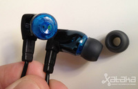
Uno siempre se pregunta cómo demonios pueden sonar unos auriculares de 400 dólares hasta que se calza unos y piensa aquello de: ‘Ahh! Era eso’. Los Logitech Ultimate Ears Triple Fi 10 no son unos auriculares cualquiera. No estamos en ligas de 100 euros como las de muchos modelos Bose o Bowers & Wilkins.
No. Logitech pretende entrar muy en serio en el segmento de audio sibarita-profesional y ha lanzado unos auriculares que compiten a su manera con monstruosidades como los Shure e5C. Unos cascos sobrados de calidad pero con un precio de 489 dólares (299 euros) que plantea la pregunta de siempre: ¿Quien puede disfrutarlos?
La fiesta del accesorio
Lo primero que llama la atención de los Logitech Ultimate Ears Triple Fi 10 es la inusitada cantidad de acceosrios que traen y que dan ya una idea de que no estamos ante unos auriculares normales.
En la caja encontramos un alargador de Minijack, un adaptador chapado en oro para jack de 6.3 milímetros, un atenuador de picos para fuentes de audio inestables como las de los aviones, un pequeño accesorio de limpieza, diez almohadillas de repuesto y una cómoda caja metálica en la que transportarlo todo.
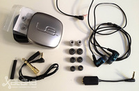
De todo esto, las almohadillas merecen mención especial. Aparte de 6 piezas en silicona de distintos tamaños, hay dos pares de almohadillas moldeables de espuma Comply, un material similar al de los tapones médicos para los oídos que se adapta como un guante al interior del canal auditivo y nos aisla completamente del entorno. No entiendo por qué no hacen más almohadillas en este material. Es estupendo.
Diseño y ergonomía
Los Logitech Ultimate Ears Triple Fi 10 tienen un canal bastante largo, en otras palabras, son bastante grandes para ser intraauriculares. La construcción es muy buena, con cables a prueba de tirones y enredos y un aspecto recio a la par que elegante. Los auriculares no disponen de ningún tipo de manos libres. Están concebidos para audio exclusivamente.
Es en el aspecto de ergonomía en el que estos superauriculares no nos acaban de convencer. Unos cascos deben ser fáciles de poner y quitar y los Logitech Ultimate Ears Triple Fi 10 no lo son en absoluto. La parte final del cable es semirígida y moldeable, lo que le permite adaptarse a la oreja para colocarnos los auriculares como su diseñador los concibió, o sea, al reves de lo normal.
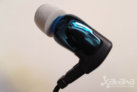
Una vez llegamos a esta posición, los Triple Fi 10 son muy cómodos, pero las primeras veces que nos los pusimos tardamos un buen rato en situarlos. Si teneis el pelo minimamente largo, el proceso se complica aún más.
Un mundo de matices
A nivel de audio, los Logitech Ultimate Ears Triple Fi 10 ofrecen incluso más de lo que marca su precio. El interior de cada auricular cuanta con tres drivers independientes que ofrecen un sonido sensacional. Para los amantes de las estadísticas, los Triple Fi 10 presumen de una Respuesta de frecuencia de entre 10 Hz y 17 kHz, una impedancia de 32 ohmios a1 kHz, sensibilidad de 117 dB SPL/mW a 1 kHz, y un nivel de aislamiento de ruido de 26 dB.
Todo esto, traducido, es un sonido espectacular, y ahora viene el problema. En los sistemas de sonido, la calidad final siempre responde al eslabon más débil de la cadena. En otras palabras, si utilizamos unos auriculares como estos con un MP3 a 128kbit/s merecemos que se levante Jim Morrison de la tumba para darnos de collejas.
Utilizado, por ejemplo, con un iPhone o un smartphone y archivos en local o servicios como Spotify, los Logitech Ultimate Ears Triple Fi 10 suenan como cualquier auricular de 80 a 200 euros, muy bien, pero no supone mucha diferencia. Es en el momento en el que cargamos una pista de CD íntegra cuando descubrimos aquello que decíamos al principio, que la música tiene cientos de matices, de instrumentos tan leves que se pierden en la compresión.
Ultimate Ears Triple Fi 10. La opinión de Xataka
Si te gusta escuchar música sin más y estás todo el día con Spotify o Grooveshark, no te compres estos auriculares. Son un gasto superfluo del que no vas a disfrutar al cien por cien y te arriesgas a un disgusto épico si los pierdes o te los roban.
Si eres músico, ingeniero de sonido o sencillamente tienes un gusto exquisito por la música, nuestra recomendación es que les des un tiento a los Logitech Ultimate Ears Triple Fi 10. No son unos Shure ni unos Sennheiser, y son unos recien llegados en esto del audio de gama alta, pero han hecho los deberes y quieren codearse con los grandes. Se merecen, como poco, esa oportunidad.
Actualización: Logitech acaba de confirmarnos que el precio en España de los Triple Fi es de 299 euros, bastante más asequible que la paridad 1 dolar-1 euro que nos temíamos.
Más información | Logitech
Teléfonos con Historia I: Motorola Startac
Tue, 14 Feb 2012 10:00:00 GMT
En apenas 15 días dará comienzo una nueva edición del Mobile World Congress en Barcelona. Mientras esperamos a que llegue la fecha, hemos vuelto la vista atrás para seleccionar 15 teléfonos muy especiales. Se trata de los 15 terminales más famosos, populares o innovadores de la era pre-smartphone.
No es fácil confeccionar una lista de terminales que ya comienzan a ser algo más que teléfonos, y somos conscientes de dejarnos muchos en el tintero. Por pura convención, hemos decidido marcar el final de la era pre-smartphone en 2007, año en que fueron lanzados al mercado el Nokia N95 y el primer iPhone. Pero ahora remontémonos hasta el año 1996 de la mano de nuestro primer venerable, el Motorola Startac.
Lanzado en enero de 1996, el Motorola Startac tiene el honor de ser el primer móvil con formato de concha completo o Clamshell. También es el primero en incorporar los avisos por vibración, una tecnología heredada de los busca de la compañía.

Motorola Startac, un pionero
El Startac era ligero (94 gramos) y muy pequeño para la época (46 × 87 × 20 milímetros cerrado). Para desplegar la antena había que tirar suavemente de ella y se rompía con facilidad. También fue el primero en soportar mensajería SMS, y eso que era una tecnología en plena implantación. A la primera versión, la 1300, con pantalla monocroma LED en rojo le siguieron varias ya con pantalla digital. Fue el primer móvil en venderse con una segunda batería conectable desde fuera.
El formato del Startac fue tan rompedor que vendió 60 millones de unidades pese a arrancar con un precio de 1.000 dólares, una fortuna para la época. Fue avistado como el teléfono de los agentes Mulder y Scully en Expediente X y protagonizó los deseos tecnológicos de toda una generación. A día de hoy pueden comprarse versiones actualizadas (capaces de funcionar sin problema en las redes actuales) de este veterano a un precio de 150 euros.
iPad 3 podría llegar el 7 de marzo con conectividad LTE
Tue, 14 Feb 2012 07:43:57 GMT

Los plazos en la carrera de la rumorología sobre productos de Apple (que da para un grado universitario por lo menos) se van cumpliendo al pie de la letra.
El iPad 3 podría ser presentado el miércoles 7 de marzo según podemos leer ya en diferentes medios que tratan la actualizada de la compañía de la manzana. Como apuntan en Applesfera, que la mayoría de ellos se hayan ya puesto de acuerdo en una fecha es bastante significativo, así que de momento anota esa fecha en tu calendario.
Sobre las especificaciones se sabe menos con certeza, pero conviene anotar lo que apuntan desde el WSJ: el iPad 3 llegará a EEUU con conectividad LTE.
El teléfono Motorola con procesador Intel y Ice Cream Sandwich
Mon, 13 Feb 2012 23:13:24 GMT
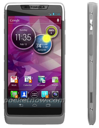
El pasado CES 2012, tanto Intel como Motorola anunciaron un acuerdo por varios años en el que prometían una serie de dispositivos en los que se utilizarían los procesadores de la firma americana, junto al sistema operativo Android.
Todo apunta que el Mobile World Congress 2012 de Barcelona será el lugar donde se presente el primer teléfono, y parece que no ha habido forma de llevarlo en secreto porque los medios ya están contando cosillas sobre él, e incluso tenemos una recreación.
El teléfono no sólo se atreve con Android sobre un procesadores de Intel (arquitectura X86), sino que usará la última versión publicada, Ice Cream Sandwich, con una personalización de la propia Motorola.
De la recreación podemos interpretar que los botones físicos no son necesarios, como en Samsung Galaxy Nexus. De la cámara de fotos se sabe que será un apartado destacado, con un modo ráfaga de hasta 15 imágenes por segundo, y botón dedicado.
Será interesante conocer si Motorola tiene las intenciones de crear accesorios como los webtops (convierten al teléfono en un portátil) que diseñó para sus dispositivos Android.
Sobre el procesador, la plataforma Medfield de Intel será la elegida, e intuimos que será el mismo que utilizará el Lenovo K800: un Intel Atom Z2460 a 1.6GHz, junto a una GPU PowerVR540 a 400MHz.
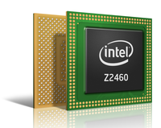
Vía | PocketNow
TomTom Classic Series: los GPS superventas se unen
Mon, 13 Feb 2012 17:27:00 GMT
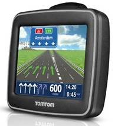
TomTom ha anunciado que une en una sola gama, a la que ha llamado Classic Series, a algunos de sus modelos más destacados de los últimos tiempos.
Los TomTom Classic Series son los modelos Start Classic, XL Classic y XXL Classic, todos ellos con mapas de Europa Occidental (22 países). Lo que tienen en común estos navegadores es que se relanzan con un precio más asequible que hasta ahora. Podríamos decir que esta nueva gama es como la de los videojuegos clásicos que encontramos en muchas plataformas.
Las prestaciones de estos “nuevos” navegadores GPS de coche son ya conocidas. La diagonal de su pantalla táctil depende del modelo y llega hasta las cinco pulgadas. Vienen con Guía Avanzada de Carril, indicaciones por voz y asistente de aparcamiento. El modelo Star mantiene su peculiar personalización con carcasas intercambiables.
Los precios de estos nuevos TomTom son de 100 euros para el Star Classic, de 120 euros para el Xl Classic y de 140 euros para el más grande, el TomTom XXL Classic.
Más información | TomTom.
La grabación de datos mediante pulsos de calor abre las puertas a tasas de transferencia de 200GBps
Mon, 13 Feb 2012 15:30:00 GMT
Comencemos Tomando como referencia un disco duro con interfaz SATA III, que tiene tasas de transferencia teóricas de hasta 600MBps. Sin perder esa cifra de vista, científicos de la Universidad de York acaban de dar con una tecnología que permite transferir hasta 200GBps (Más de 300 veces la velocidad del SATA III) sobre discos duros con hasta 10 veces más capacidad que los actuales.
El secreto detrás de esta nueva tecnología es nada menos que un nuevo sistema de grabación por pulsos de calor.
Hasta ahora, las unidades de almacenamiento magnéticas se leían y escribían mediante campos magnéticos. El equipo de York ha descubierto que la aplicación de pulsos ultracortos de calor (con ayuda de un láser) cambia la orientación magnética norte-sur de parejas de nanopartículas magnéticas.
Sucesivos pulsos de calor cambian la orientación de norte-sur a sur-norte, lo que puede traducirse perfectamente a ceros y unos y utilizarse como sistema de almacenamiento.
El equipo de científicos, entre los que se cuentan también varios españoles, asegura que el método es más eficiente desde el punto de vista energético. Es más, incluso podría desarrollarse un método para que aprovechase el calor emitido por otros componentes de un dispositivo.
El descubrimiento ha sido publicado en la prestigiosa revista Nature. Ahora sólo falta que empiece a ser adaptado para aplicaciones comerciales.
Vía | Gizmag
Más información | Universidad de York
Verde que te quiero verde: adivina el cacharro
Mon, 13 Feb 2012 13:30:00 GMT

Como algún fiel lector nos ha recordado por Twitter, llevábamos un tiempo sin proponeros nuevos Adivina el cacharro en Xataka. Eso vamos a solucionarlo a la de ya.
Hoy os traemos un nuevo reto en forma de adivinanza. El funcionamiento es muy claro: os damos una pista en el título (verde que te quiero verde) y colocamos un recorte de una de las imágenes que usaremos en nuestro análisis de próximos días de este cacharro que tenemos a prueba en Xataka.
El objetivo es que con esas dos pistas podáis acertar de qué cacharro se trata. ¿Quién será el primero en acertar?
Samsung Galaxy Tab 2 con Ice Cream Sandwich
Mon, 13 Feb 2012 11:01:00 GMT

Samsung ya tiene una tablet con lo último de Android, Ice Cream Sandwich. Se trata de Samsung Galaxy Tab 2, y por lo poco que podemos ver, estéticamente es muy parecida a la Galaxy Tab original.
En cuanto a especificaciones, no nos encontramos con nada sorprendente, ni en lo que respeta a pantalla, ni en potencia de proceso. Más bien parece un modelo bastante actual, no una bomba para el Mobile World Congress 2012, al que han metido Android 4.0.
Su procesador principal se pasa al doble núcleo (a 1GHz), como era de esperar, la memoria RAM sube a 1GB, la pantalla de 7 pulgadas es LCD (1024×600 píxeles), cuenta con conectividad WiFi y 3G, la batería es de 4.000mAh, la cámara principal es de 3 megapíxeles, y habrá variantes con 16 y 32GB.
Otro detalle que nos adelantan es su grosor, 10.5 milímetros, y en cuanto a las imágenes, podéis ver que Samsung no dejará TouchWiz de lado como personalización Android. La cámara no cuenta con flash, ni autoenfoque, y la cámara frontal pase a ser VGA.
Por las especificaciones, esperamos una tablet bastante competitiva en cuanto a precio, ya que parece un modelo para situarse al nivel de Samsung Galaxy Tab 7.0 Plus, una tablet presentada en septiembre del año pasado, que dicho sea de paso también recibirá Ice Cream Sandwich.

Más información | Samsung
Imágenes | Sammy Hub